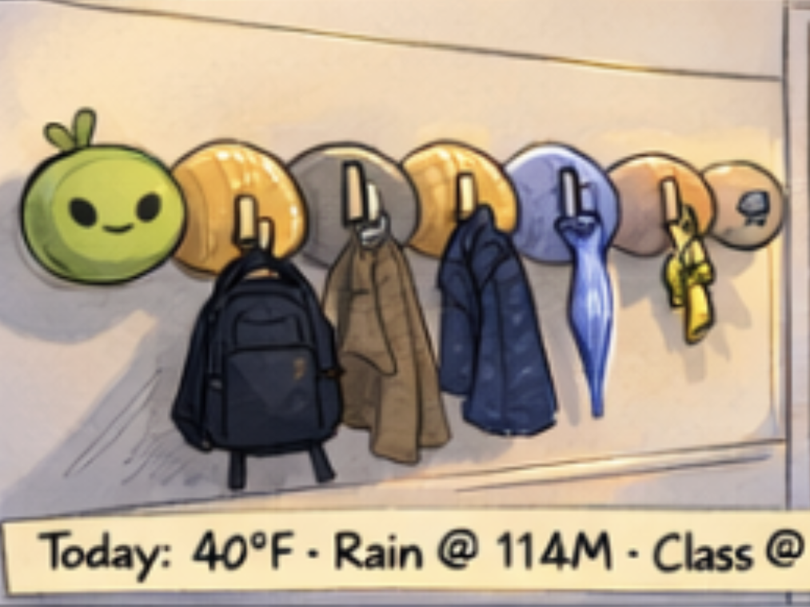
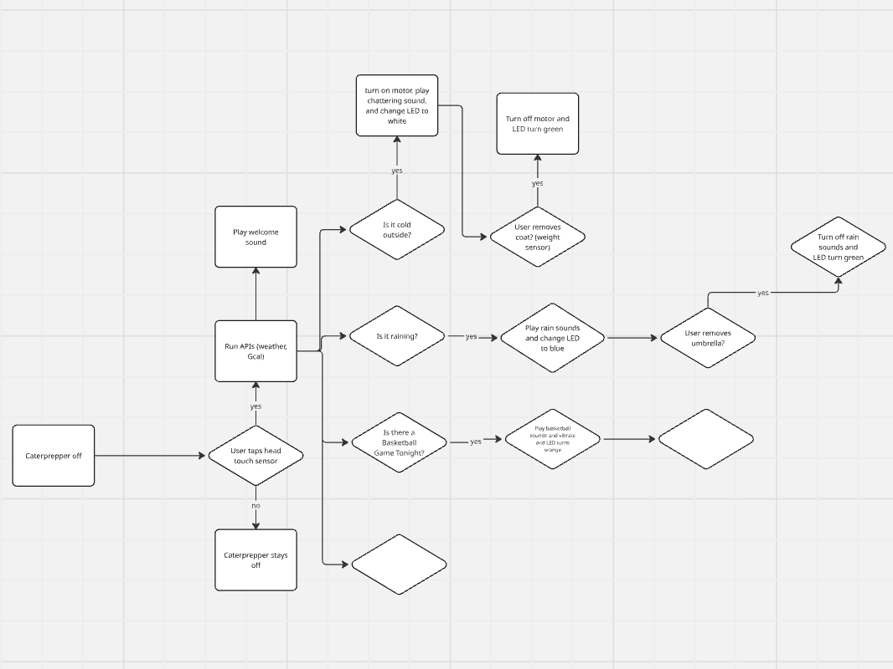
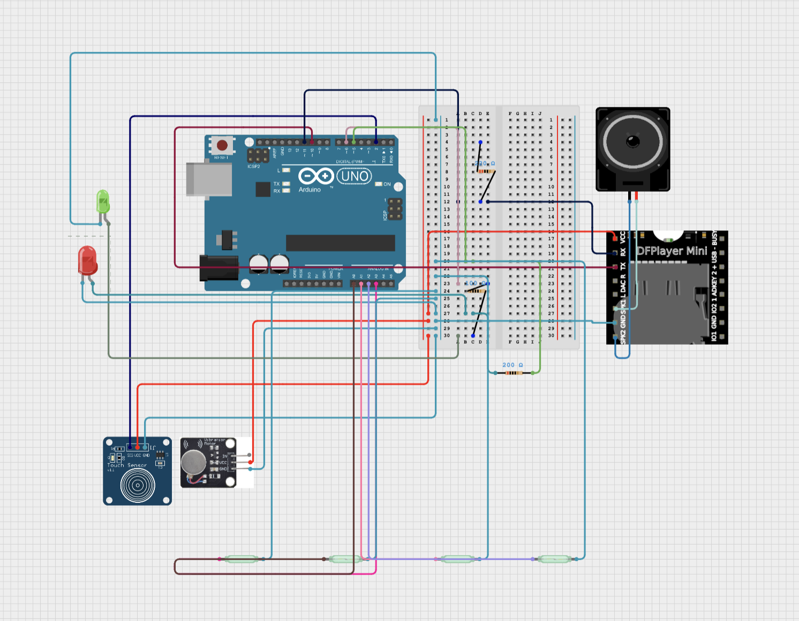
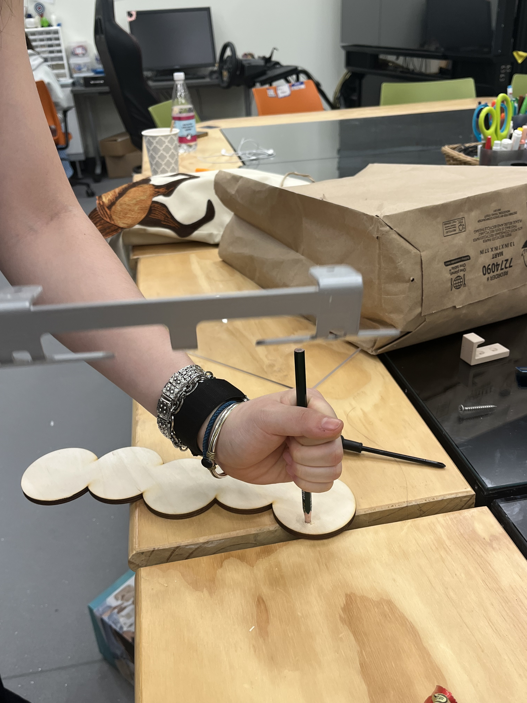
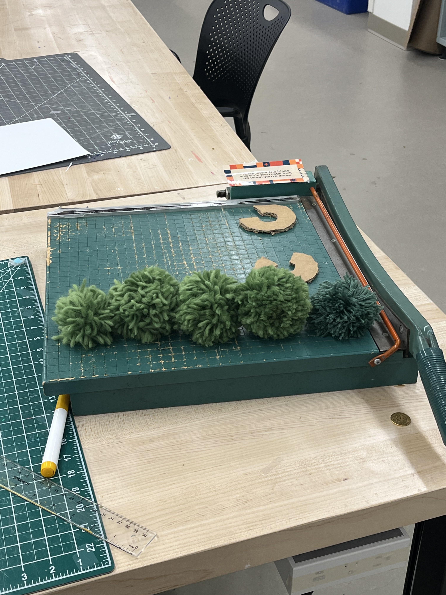
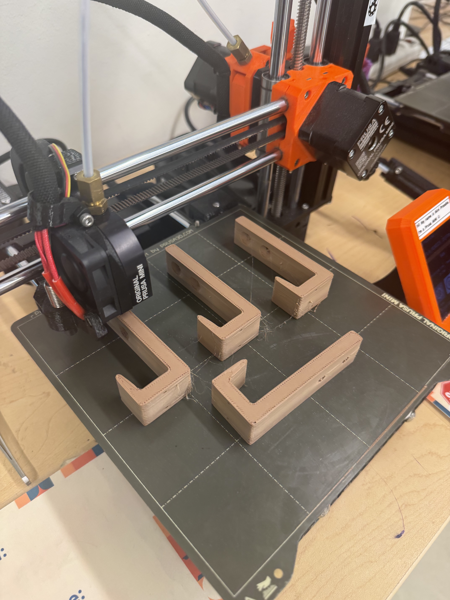
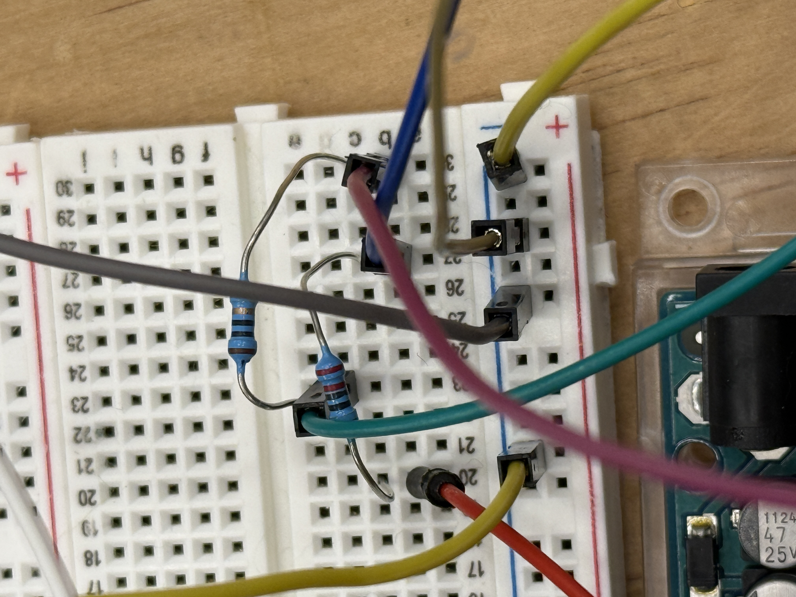
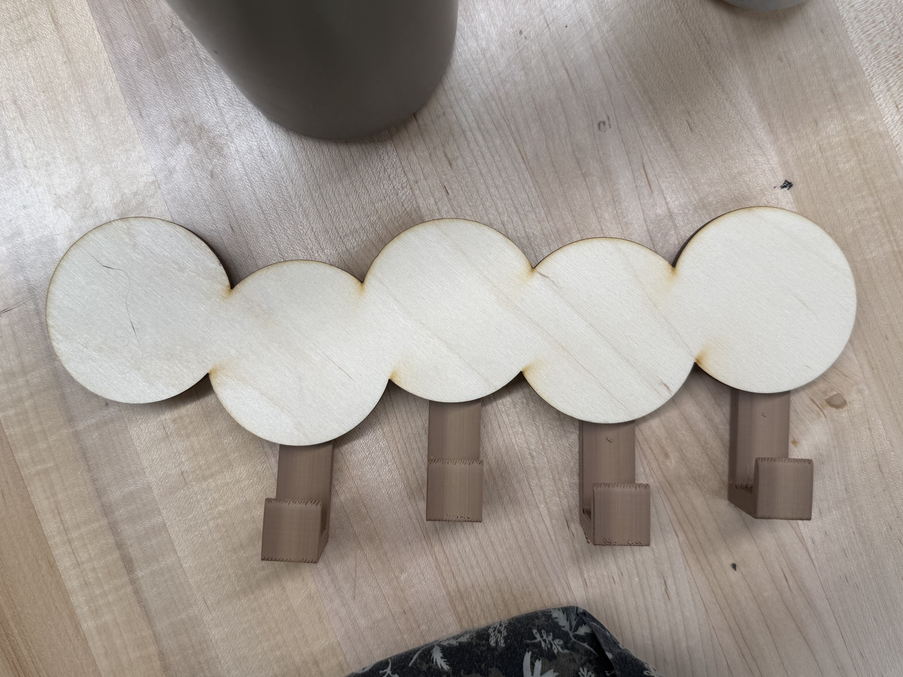

A smart modular coat rack shaped like a caterpillar that physically reacts to live weather and your personal schedule, helping you prepare for the day.
Rushing out the door in the morning, many of us forget essential items: a coat when it's cold, an umbrella when it's raining, keys we'll need later. Phone-based reminders don't solve this well: notifications are easy to swipe away, and "alert fatigue" means we stop paying attention to them altogether.
Daily preparation ends up feeling like an invisible mental checklist. There's no physical, ambient feedback loop that ties the act of leaving the house to the items you actually need.
CaterPrepper addresses this gap by turning the coat rack itself into the reminder systems. Using tangible cues (light, vibration, sound) instead of screen-based notifications, embedded in an emotionally engaging caterpillar form that makes the routine feel like caring for a companion rather than checking a list.
🎯 The Challenge
Forgetting coats, umbrellas, or keys when rushing out
Alert fatigue from easy-to-ignore phone notifications
Daily preparation as a cognitive burden
👤 Target Users
People who are often in a rush in the mornings
Those who tend to forget essentials when leaving
Anyone wanting a more ambient, screen-free routine
Conceptual Design
How CaterPrepper Works
CaterPrepper is a wall-mounted or tabletop caterpillar with modular body segments, each equipped with a hook and a reed switch. Users hang items on the hooks using small magnets. When you're ready to leave, you tap the caterpillar's touch sensor, and it walks you through collecting your things.
Interaction Flow
Hang items (coat, umbrella, keys, bag) on hooks → magnets trigger reed switches
Tap the touch sensor to start the departure sequence
CaterPrepper blinks green, plays a welcome sound, waits 3 seconds
Checks each hook → red light + vibration + voice prompt for items still hanging
Remove each item as prompted; the caterpillar advances through segments
All items collected → green light + happy chime → you're ready!
Tap again to reset
What Makes It Novel
Emotionally engaging creature-like interface, not a generic gadget
Physical cues (light, vibration, sound) instead of screen notifications
Reframes reminders as a care relationship
Tangible, modular design → segments can be added or reconfigured
Works without a phone or app; fully standalone
Sketches & Diagrams
Early concept sketches showing the caterpillar form factor, feedback states, and attachment interaction model.



Design Process & Artifacts
From Sketch to Prototype
Our design evolved through several stages: initial brainstorming and concept sketches, low-fidelity physical mockups, circuit prototyping on a breadboard, laser-cut wooden segments, and final assembly with embedded electronics.





Prototype Demonstration
See It in Action
A 1–3 minute video demonstrating the working prototype: how items are hung, the touch-to-start interaction, sequential reed switch checking with audio/haptic/visual feedback, and the "all clear" state.
🎬 Embed your 1–3 min demo video here
Replace this with a YouTube or Google Drive iframe.
Add class has-video to the wrapper div.
Components
Hardware Overview
🔌
Arduino UNO
Main microcontroller
🧲
4× Reed Switches
Detect items via magnets (A0–A3)
👆
Touch Sensor
Capacitive touch on pin 2
📳
Vibration Motor
Haptic feedback on pin 9
💡
Red & Green LEDs
Status indicators (pins 5 & 6)
🔊
DFPlayer Mini
MP3 playback (pins 10 & 11)
Technical Details
State Machine
The system is driven by a finite state machine. After a touch press, it checks each reed switch in sequence, playing the corresponding audio prompt and activating the motor until the user removes the item.
State
Behavior
Transition
IDLE
All outputs off; waiting for touch
Touch → START_DELAY or DONE_GREEN
START_DELAY
Green blink + welcome sound; 3s countdown
After 3s → check reeds
ACTIVE_REED2
Red LED, motor on, playing track 2
Magnet removed → WAIT_REED3
WAIT_REED3
Checking reed 3
Clear → DONE_GREEN; detected → ACTIVE_REED3
ACTIVE_REED3
Playing track 3
Removed → WAIT_REED4
ACTIVE_REED4
Playing track 4
Removed → WAIT_REED1
ACTIVE_REED1
Playing track 5
Removed & clear → DONE_GREEN
DONE_GREEN
Green LED, success chime
Touch → IDLE
Dependencies
Libraries Used
SoftwareSerial
#include <SoftwareSerial.h>
Creates a serial connection on pins 10/11 to communicate with the DFPlayer Mini, keeping hardware serial free for debugging.
DFRobotDFPlayerMini
#include <DFRobotDFPlayerMini.h>
High-level interface to the DFPlayer Mini — volume control, track playback from SD card, and playback event detection.
Source Code
Code Snippet
Core logic showing the IDLE and START_DELAY states. Full source with inline comments is in the GitHub repository.
caterprepper.ino
voidloop() {
switch (currentState) {
caseIDLE:
digitalWrite(motorPin, LOW); // motor offdigitalWrite(redLED, LOW); // red offdigitalWrite(greenLED, LOW); // green offif (newTouchPress()) {
if (anyItemPresent()) {
playTrack(1); // welcome sound
startTime = millis();
currentState = START_DELAY;
} else {
goGreen(); // nothing to grab!
}
}
break;
caseSTART_DELAY: {
unsigned long elapsed = millis() - startTime;
// blink green during 3-second countdownif ((elapsed > 100 && elapsed < 300) ||
(elapsed > 500 && elapsed < 700)) {
digitalWrite(greenLED, HIGH);
} else {
digitalWrite(greenLED, LOW);
}
if (elapsed > 3000) { // begin checking reedsif (anyItemPresent()) {
digitalWrite(redLED, HIGH);
digitalWrite(motorPin, HIGH);
// → first active reed state
} else {
goGreen();
}
}
break;
}
// … remaining states follow same pattern
}
}